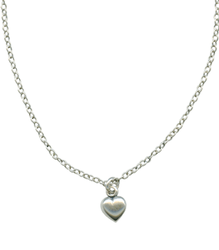

A necklace is an article of jewellery that is worn around the neck. Necklaces may have been one of the earliest types of adornment worn by humans.[1] They often serve ceremonial, religious, magical, or funerary purposes and are also used as symbols of wealth and status, given that they are commonly made of precious metals and stones.